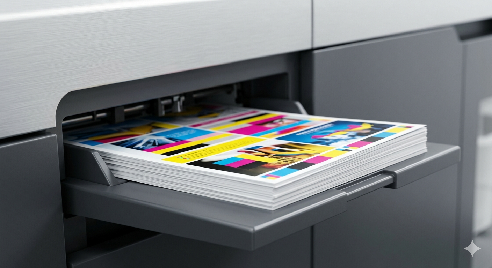

CMYK
Digital Colour Printing
Sharp colour output for presentations, menus, reports, certificates, flyers, forms and office material.
- A4/A3 prints
- Single or double side
- 80–300 GSM subject to stock
- Matte, gloss or textured paper options
Price depends on: paper GSM, colour coverage, sides, quantity, finishing and urgency.
Request this service